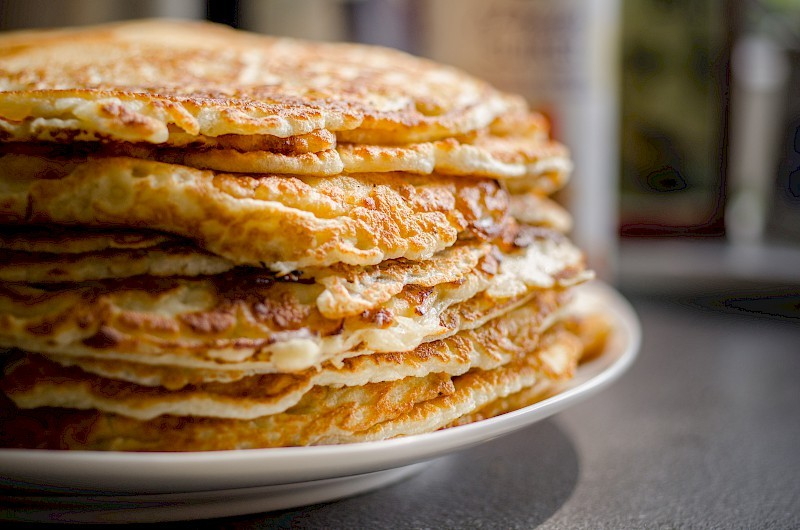

welkom
recept1 pannenkoeken
heel luchtig en vol smaak lekker voor in de ochtend
recept2 friedchicken
heel crispy vullend de kip is heel mals en sapig
recept3 champignons en rijst
Dit gerecht is een romige en hartige combinatie van malse kip, champignons en een zachte roomsaus, perfect geserveerd met rijst voor een comfortabele en smaakvolle maaltijd.